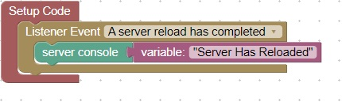

<H1>Reload Server</h1>
This code will run when the server has completed a reload<br>
<br>
You can cause a server to reload by entering the command:<br>
reload<br>
In the server console:<br>
<br>
Try this again but change the output, download, and reload and notice the results<br>
<hr>
<center></center>
